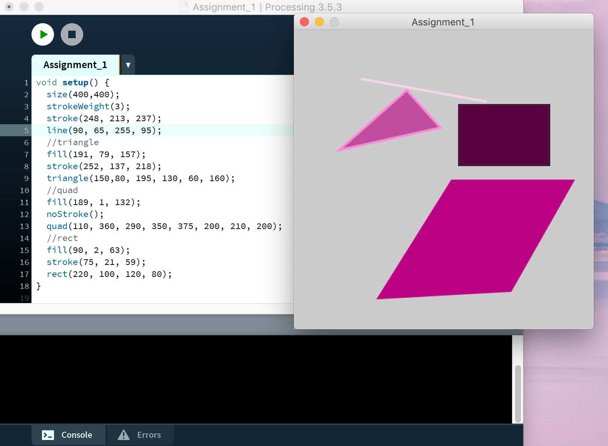

Bij de workshop computer vision zijn we aan de slag gegaan met processing. Processing wordt gebruikt voor mensen die een interactieve afbeelding of animatie willen animeren. Het programma wordt vooral gebruikt door studenten, wetenschappers en hobyisten om concepten te ontwikkelen. Tijdens deze workshop hebben wij verschillende kleine opdrachten uitgevoerd om kennis te maken met het programma. Veel code lijkt op java en in de handleiding waren veel voorbeelden gegeven. Hierdoor was het makkelijker om de code te begrijpen en aan te passen.
Voor de eerste opracht heb ik een code geschreven die verschillende ellipsen weergeeft. De ellipsen staan op verschillende locaties, hebben verschillende kleuren, verschilllende breedtes en hoogtes en zijn met en zonder randen. Hieronder staat de afbeelding van mijn code en het resultaat.
Voor de tweede opracht heb ik een code geschreven die verschillende vormen weergeeft. De vormen die ik heb gemaakt zijn lijn, driehoek, vierkant en een ruit. De vormen staan op verschillende locaties, hebben verschillende kleuren, verschilllende breedtes en hoogtes en zijn met en zonder randen. Hieronder staat de afbeelding van mijn code en het resultaat.
Voor de derde opracht heb ik een code geschreven die twee verschillende vormen bevat. De vormen hebben een verschillende kleur en zijn interactief. De lijn beweegt op basis van de computermuis, de ellips zit aan de lijn vast en de ellips groeit op het scherm. Uiteindelijk is het beeldscherm gevuld met kleur als je niks beweegt.
Voor deze opdracht is de code zo geschreven dat er een ellipse om je gezicht heen komt te staan. Dit is gedaan via de LiveCamTest. Hieronder is de code en het resultaat te bekijken.
Voor deze opdracht is de code zo geschreven dat er een rode clownsneus op mijn neus komt. Dit is gedaan via de LiveCamTest. Hieronder is de code en het resultaat te bekijken.
Voor deze opdracht is de code zo geschreven dat kleuren waar je op drukte aan de rechterkant van het beeld kwamen te staan.
Voor deze opdracht moesten we de plaatjes met speciale code voor de LiveCam houden. Er kwamen vierkante 3D blokjes op de afbeeldingen.